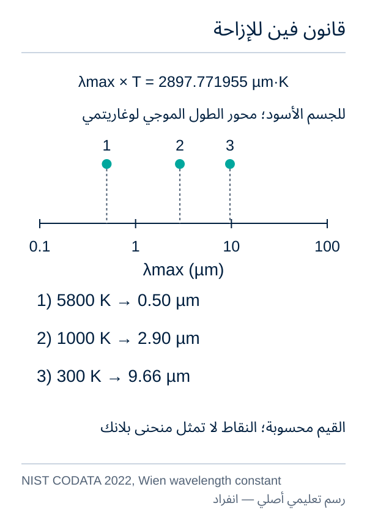

قانون فين للإزاحة
Wien's Displacement Law
كلما ارتفعت حرارة الجسم قصر الطول الموجي الذي يشع عنده أكثر طاقته، ولهذا يبدو المعدن الساخن أحمر ثم أبيض.
كلما ارتفعت حرارة الجسم قصر الطول الموجي الذي يشع عنده أكثر طاقته، ولهذا يبدو المعدن الساخن أحمر ثم أبيض.
الطول الموجي عند أقصى إشعاع طيفي لجسم أسود يتناسب عكساً مع درجة حرارته الديناميكية الحرارية: λ_max·T = b، حيث b ثابت إزاحة فين الطولي.
قانون فين يختلف عن قانون ستيفان–بولتزمان: ستيفان–بولتزمان يعطي مقدار الطاقة الكلية المشعة، وفين يحدد موقع قمة التوزيع الطيفي. ويختلف عن قانون بلانك الذي يعطي التوزيع الطيفي الكامل. ولا يُستخدم لحساب مقدار الإشعاع بل لموقع القمة فقط. وتمييز إلزامي: ثابت فين الطولي (λ_max) يختلف عن ثابت فين الترددي (ν_max)، فالقيمتان ليستا متبادلتين ببساطة.
جسم عند 300 K: الطول الموجي عند أقصى إشعاعه نحو 9.66 ميكرومتر، أي في نطاق الأشعة تحت الحمراء المتوسطة/البعيدة.
كيف تعمل الظاهرة؟
قانون فين ليس قانوناً مستقلاً بل نتيجة داخلية لتوزيع بلانك: إذا كُتب الإشعاع الطيفي للجسم الأسود بدلالة المتغير اللا بُعدي x = hc₀/(kλT)، صار الحد الأسي وحده حاكماً لشكل المنحنى، وموقع القمة يصير جذراً لمعادلة واحدة لا تعتمد على T. اشتقاق Janna يوضح ذلك: التفريق بالنسبة إلى λ ثم المساواة بالصفر يعطي 5[e^x − 1] = x·e^x، وحلّها x_max = 4.9651. ثم يُعاد ترتيب x_max لإعطاء λ_max·T = hc₀/(4.9651 k). فالسبب المباشر لقصر الطول الموجي مع ارتفاع الحرارة أن التوزيع الطيفي يتوسع ويُزيح كتلته نحو الأطوال الأقصر حين يزداد T، لأن العامل الأسي يهيمن عند الأطوال القصيرة.
العلاقة بالأرقام
λ_max·T = 2.897 771 955×10⁻³ m·K (CODATA 2022، exact). القيمة المطبوعة في Janna: 2.898×10⁻³ m·K — فرق نسبي نحو 0.008% عن CODATA، وهو أثر التقريب لا تناقض. x_max = 4.965 114 231 (CODATA) و4.9651 (Janna) — نفس الجذر. الثابت الترددي b′ = 5.878 925 757×10¹⁰ Hz·K⁻¹ (CODATA)، وجذره x_ν,max = 2.821 439 3 (Das). مثال الشمس في Janna: λ_max = 0.5 µm ⟹ T = 5800 K، والتّدفق 6.422×10⁷ W/m² محسوباً بـσ = 5.675×10⁻⁸ (قيمة أقدم من CODATA 5.670 374 419×10⁻⁸). مثال 300 K: λ_max ≈ 9.66 µm (محسوب من ثابت CODATA — يُعلن أنه حساب لا نقل).
مفاهيم متقاربة
ثلاثة تمييزات: (1) فين يعطي موقع القمة، وستيفان–بولتزمان يعطي المساحة تحت المنحنى. (2) فين ≠ بلانك: بلانك يعطي التوزيع كاملاً، وفين نتيجة منه. (3) ثابت فين الطولي ≠ الترددي: λ_max·T وν_max·T ثابتان مختلفان، والتحويل بينهما ليس مقلوباً بسيطاً لأن التوزيع يُكتب بالنسبة إلى λ أو ν — والدليل المقيس أن حاصل ضرب الثابتين 1.704×10⁸ m/s لا c (Das 2015).
حدود التطبيق
حدود إلزامية: (أ) القانون يخص الجسم الأسود؛ لسطح حقيقي بانبعاثية تعتمد على الطول الموجي قد تنتقل القمة. (ب) λ_max هو الطول الموجي عند أقصى إشعاع طيفي، لا الطول الموجي المتوسط ولا الطول الموجي الذي يحمل نصف الطاقة. (ج) لا يُستخدم لحساب مقدار الإشعاع. (د) القيمة 2.898×10⁻³ في Janna مقرَّبة؛ عند الحاجة إلى دقة أعلى تُستخدم CODATA. (هـ) مثال الشمس يفترض سطح الشمس جسماً أسود «لعدم معرفة الانبعاثية» بنص المصدر، فالناتج تقدير لا قياس. (و) وحدة b في CODATA هي «متر لكل دورة» لا متراً مجرداً — تُذكر عند الكتابة الرمزية.

| الكمية | القيمة | المصدر |
|---|---|---|
| ثابت إزاحة فين الطولي b (CODATA 2022) | 2.897 771 955×10⁻³ m K | [1] |
| ثابت إزاحة فين الترددي b′ (CODATA 2022) | 5.878 925 757×10¹⁰ Hz K⁻¹ | [2] |
| ثابت ستيفان–بولتزمان σ (CODATA 2022) | 5.670 374 419×10⁻⁸ W m⁻² K⁻⁴ | [3] |
المصادر
- 1 CODATA Value: Wien wavelength displacement law constant — NIST — Physical Measurement Laboratory, CODATA. physics.nist.gov/cgi-bin/cuu/Value?bwien · اطُّلع عليه 2026-11-21
- 2 CODATA Recommended Values of the Fundamental Physical Constants: 2022 — TABLE XXXIII: «Wien displacement law constants b = λmax T = c2/4.965 114 231... ; b′ = νmax/T = 2.821 439 372... c/c2» — American Physical Society — Reviews of Modern Physics (Mohr, Newell, Taylor, Tiesinga). arxiv.org/pdf/2409.03787v1 · اطُّلع عليه 2026-11-21
- 3 CODATA Value: Stefan-Boltzmann constant — NIST — Physical Measurement Laboratory, CODATA. physics.nist.gov/cgi-bin/cuu/Value?sigma · اطُّلع عليه 2026-11-21
- 4 Wavelength- and Frequency-Dependent Formulations of Wien's Displacement Law — American Chemical Society — Journal of Chemical Education (Ranjan Das). pendidikankimia.walisongo.ac.id/wp-content/uploads/2018/10/35-5.pdf · اطُّلع عليه 2026-11-21
استشهد بهذا المصطلح
الصيغتان مبنيتان من بيانات الصفحة نفسها: العنوان والتاريخ ورابط النسخة المنشورة.
قانون فين للإزاحة — Wien's Displacement Law. (2026). ديوان المعرفة — انفراد. https://infiradev.com/diwan/terms/wien-law.html
@misc{wien-law2026,
title = {قانون فين للإزاحة},
titleaddon = {Wien's Displacement Law},
howpublished = {{ديوان المعرفة — انفراد} — مرجع علمي عربي},
year = {2026},
url = {https://infiradev.com/diwan/terms/wien-law.html},
urldate = {2026-11-21},
note = {مراجعة علمية: عبدالله الهويدي — مراجعة في تطبيق انفراد}
}
راجعه: عبدالله الهويدي — مراجعة في تطبيق انفراد · 2026-11-21 · آخر تحديث 2026-11-21